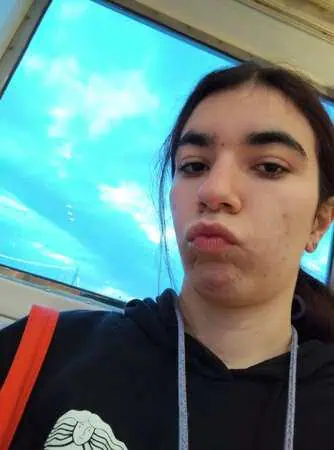
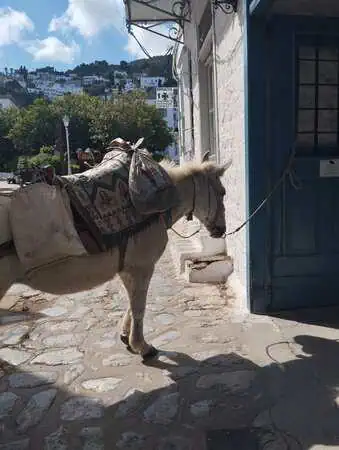
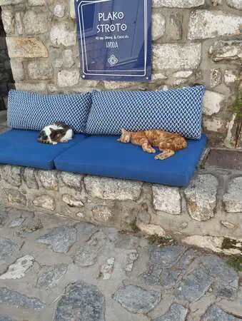
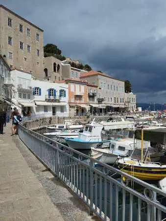
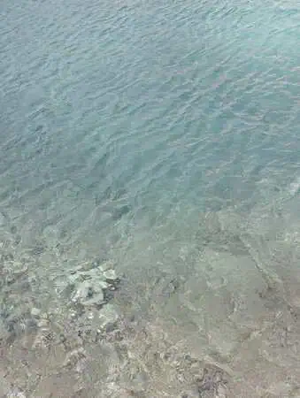
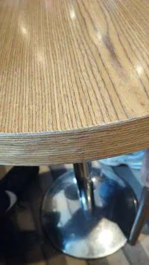
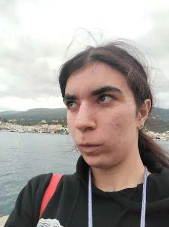
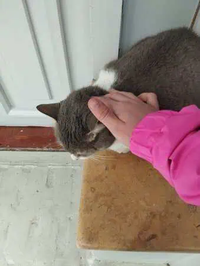
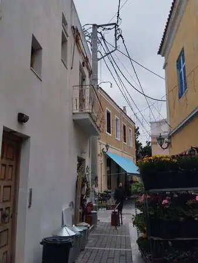
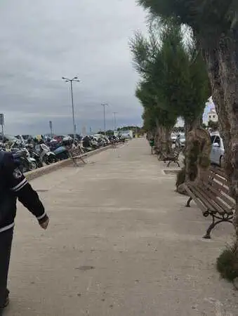

<!DOCTYPE html>
<html lang="es"></html>


<head>


<title>Dia 3</title>
<meta name="keywords" content="Atenas, Viajes, Grecia">
 <meta name="author" content="Antía" >
 <meta name="description" content="Pagina sobre el viaje a Grecia">
 <meta charset="utf-8">
 <link rel="icon" href="img/favicon-32x32.png" type="image/png">
 <link rel="stylesheet" href="estilosdias.css">
</head>
<body>
    <nav>
        <ul>
        
            <li><a href="index.html">Portada</a> </li>
            <li><a href="Dia1.html">Día 1</a> </li>
            <li><a href="Dia2.html">Día 2</a> </li>
            <li><a href="Dia3.html">Día 3</a> </li>
            <li><a href="Dia4.html">Día 4</a> </li>
            <li><a href="Dia5.html">Día 5</a> </li>
            <li><a href="Dia6.html">Día 6</a> </li>
            <li><a href="Dia7y8.html">Días 7 y 8</a> </li>
        </ul>
    </nav>
<h1> Día 3 (Islas Griegas)</h1>
<article>
    <p>Este día comenzó temprano, a las  6 de la mañana hora local,para coger un barco que nos llevaría a tres islas griegas: Hydra, Poros y Aegina(Εδρα,Πόρος y Αίγινα)
</p>

</article>
<article>
   <div class="foto_derecha">
    <p>El trayecto a la primera fue largo,unas 4 horas pero valió totalmente la pena,la isla era 
    enteramente peatonal sin coches para evitar la contaminación. Sus edificios tenían todos un color blanco 
    destacable que contrastaba bastante con el turquesa de sus aguas. <br>
Esta probablemente fue mi isla favorita,
     el tiempo también ayudó en esta decisión pues fue la única en la que hizo sol todo el rato. <br>
 Cuando se acabó el rato que teníamos en la isla tocaba volver al barco para ir a la siguiente y 
 comer a bordo; debido a la dispersión del grupo fuimos prácticamente los últimos en entrar 
 ,quedándonos sin sitio para sentarnos a comer, yo con suerte encontré un pequeño 
 sitio para sentarme y comer tranquila.</p>
 
 

   </div>
</article>


<article>
    <div class="foto_izquierda">
        
    
    <p>Unas 2 horas más tarde(en las cuales una mesa fue mi almohada ) 
        llegamos a la isla de Poros,, a decir verdad esta fue la que menos me gusto,
         entre el clima que no acompañaba y tan solo estuvimos 40 minutos  y nos teníamos que ir a 
         prisa para llegar a la última isla, no fue una experiencia demasiado placentera, aunque
          creo que fue más por las condiciones que por la isla en general.
        </p>
        </div>

</article>
<article>
  <div class="foto_derecha">
     
    <p>Tras una 1 y media de trayecto llegamos a la última isla que visitariamos ; 
        Egina, isla más grande de las tres famosa por sus pistachos, la verdad el clima era muy malo, 
        
        hacía mucho viento y estaba todo nublado; pero quitando eso la isla fue muy bonita
         y tenía mucho ambiente y un montón de gatos por la calle; 
        estuvimos más o menos hora y media hasta que nos avisaron para volver al barco para volver al hotel.</p>
   
    
    
    </div>
</article>
<article>
    <p>
        El trayecto en barco fue una pasada, 
        unos miembros de la tripulación hicieron una representación de baile tradicional griego; 
        pero eso no fue lo más destacado , lo más destacado fue cuando después el que ponía la música
         puso música para que bailaramos nosotros, fue súper entretenido. 

    </p>
    <p>Tras 2 horas (que pasaron como si fueran 20 minutos) llegamos al puerto, 
        donde tras que una desconocida me dijese que le gustaba como había bailado y 
        casi dejar a dos compañeros atrás porque se perdieron en un trayecto de 50 metros
         fuimos al hotel a cenar y a descansar.
</p>
</article>
<article>
    <p>Este día muy probablemente fue mi favorito 
        (excepto por el clima ) por la variedad de cosas que vimos en las distintas islas
         y el dj del barco.
</p>
</article>


</body>